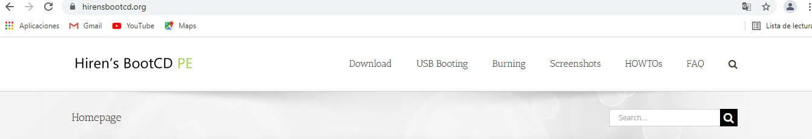
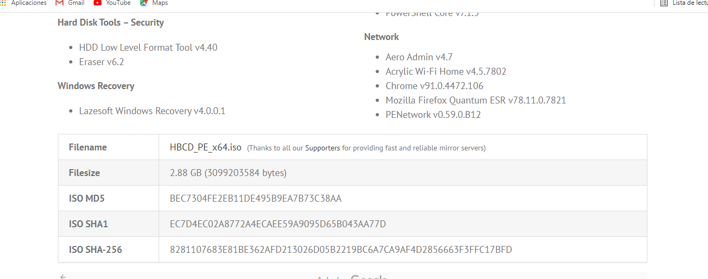

¿Para que es necesario un sofware de recuperacción?
En distintas ocasiones nos encontramos en el punto de que tenemos que recuperar una infromaccion la cual hemos perdido por alguna razon. En estos casos se hace uso de estos softwares de recuperacción. Existen muchos sofwares destinados a la recuperaccion de distintos tipos de archivos o a la recuperaccion de datos en general
Hiren boot cd es un live cd o Pendrive de arranque con secuencias de arranque múltiple, que contiene utilidades para resolver problemas de arranque en las computadoras. Es útil cuando el sistema operativo primario no es capaz de iniciarse porque el sector cero o MBR del Disco duro o de la unidad de estado sólido no está escrito correctamente o lo ha perdido. El Hiren's BootCD tiene una lista extensa de programas.
Para instalarlo lo primero que haremos sera acceder a la pagina oficial donde nos podremos informar de esta y descargarla
Tras ello accederemos a descargas donde podremos ver las diferentes caracteristicas de estas. Por eso tras leer todo iremos a la parte donde poner filename y comenzara la descarga
Con el archivo ya descargado lo seleccionaremos para instalarlo. Hay que tener en cuenta que la instalación de este para su futuro uso sera a partir de un pendrive o de un cd. Asi que necesitaremos introducirlo para su instalación